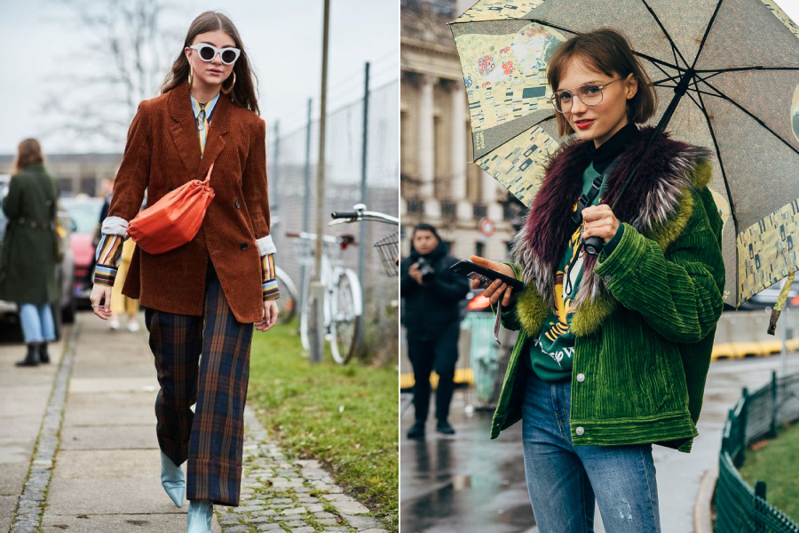
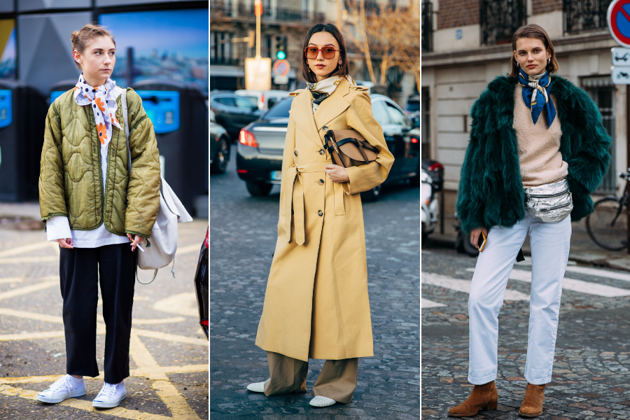

Autumn
가을의 첫 번째 코디 아이템은 시크한 매력을 뽐내기 좋은 '라이더 자켓'이다.
매니시한 매력부터 원피스 등 많은 아이템과도 잘 어울리기 때문에 손쉽게 멋을 연출할 수 있다.

두 번째, 빈티지하고 캐주얼한 매력이 돋보이는 '코듀로이'이다.
코듀로이 소재 특유의 포근한 느낌으로 다양하게 매치하기 쉽다.

세 번째, 쌀쌀한 날씨에 포인트 아이템으로 좋은 '스카프'이다.
핸드메이드 느낌으로 더욱 유니크하고 스타일리시한 매력을 어필할 수 있다.